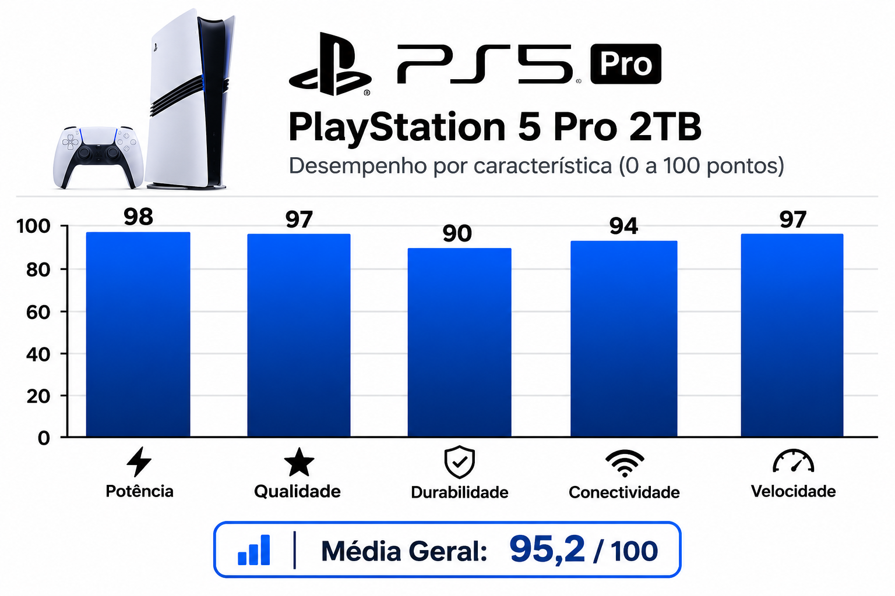

Xbox Series X
O Xbox Series X se destaca como uma máquina poderosa e bem construída, com excelente performance, design refinado e interface fluida. É uma escolha sólida tanto para gamers exigentes quanto para quem busca longevidade — embora a conectividade pudesse ser mais abrangente e alguns usuários apontem problemas pontuais com controles.
Características
| Potencia | 98 |
| Qualidade | 97 |
| Durabilidade | 90 |
| Conectividade | 94 |
| Velocidade | 97 |
| Media geral | 95.2/100 |


PlayStation 5
O PlayStation 5 é um console poderoso e inovador, com destaque para o conforto do controlador DualSense e sua excepcional velocidade interna. O design de alta qualidade e a conectividade moderna fortalecem sua posição no mercado — mesmo que não seja o mais potente no papel, oferece uma experiência muito equilibrada e imersiva.
Características
| Potencia | 88 |
| Qualidade | 89 |
| Durabilidade | 87 |
| Conectividade | 88 |
| Velocidade | 94 |


PlayStation 4
O PlayStation 4 é um console clássico e muito bem equilibrado, com uma ótima performance para a geração a que pertence. Seu design simples e elegante, combinado com um catálogo de jogos diversificado e de alta qualidade, ainda o mantém relevante no mercado, mesmo com o lançamento de consoles mais poderosos. Embora não tenha a mesma potência e inovações do PS5, o PS4 oferece uma experiência de jogo sólida e imersiva, com controle DualShock 4 confortável e boa conectividade. É uma escolha excelente para quem busca qualidade e uma vasta biblioteca de jogos, sendo ainda um dos consoles mais acessíveis para os gamers.
Características
| Potencia | 75 |
| Qualidade | 80 |
| Durabilidade | 85 |
| Conectividade | 85 |
| Velocidade | 90 |
.jpg)

Xbox Series S
O Xbox Series S é um console compacto e inovador, com destaque para seu design eficiente e desempenho ágil, oferecendo uma experiência de jogo fluida e rápida. Sua velocidade interna, alimentada pela tecnologia de SSD e suporte a ray tracing, garante tempos de carregamento rápidos e gráficos de alta qualidade. Embora seja mais acessível e não tenha o mesmo poder de processamento bruto do Series X, o Series S se destaca pela sua proposta de valor e pela experiência de jogo imersiva, consolidando-se como uma opção excelente para quem busca um desempenho sólido com custo-benefício. A conectividade moderna e a compatibilidade com o ecossistema Xbox, incluindo o Xbox Game Pass, tornam-no ainda mais atraente para os jogadores.
Características
| Potencia | 70 |
| Qualidade | 82 |
| Durabilidade | 90 |
| Conectividade | 80 |
| Velocidade | 85 |